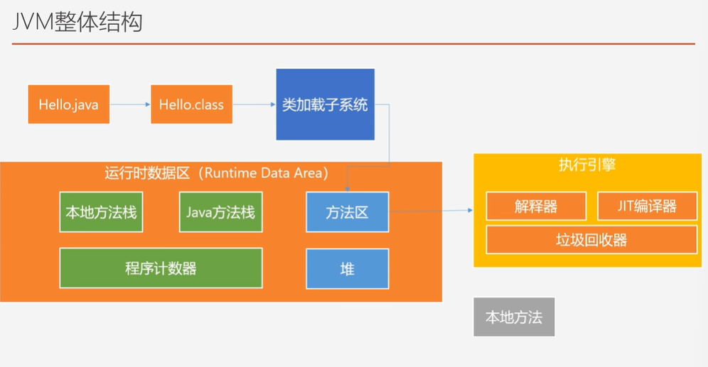
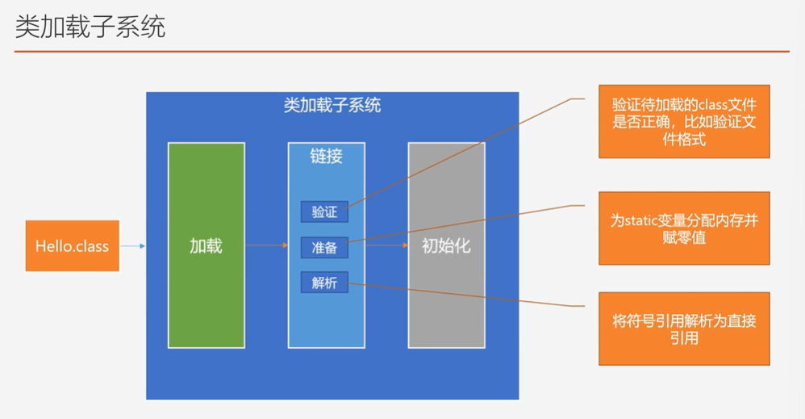
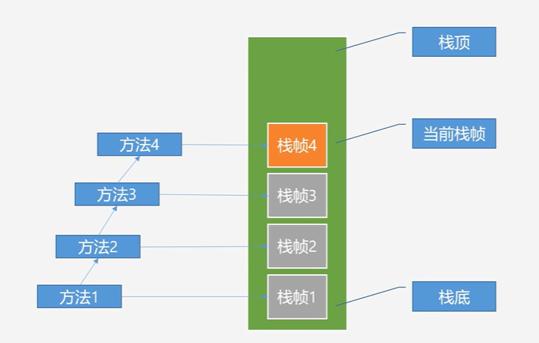
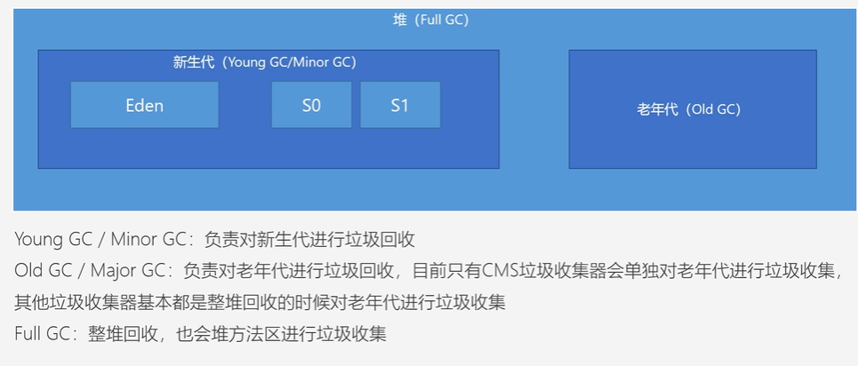
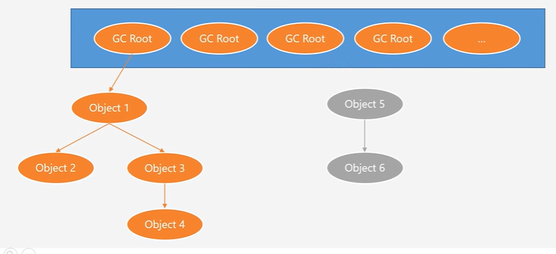
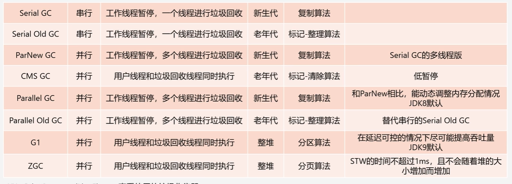
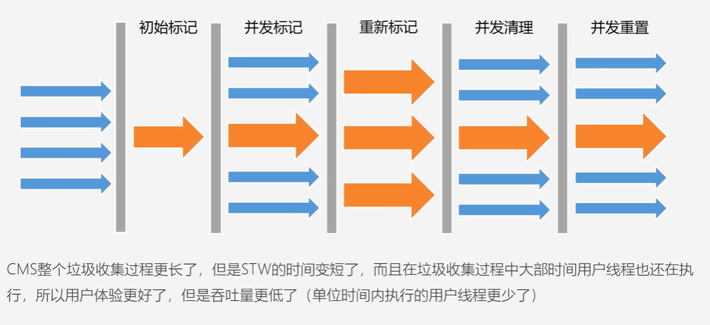
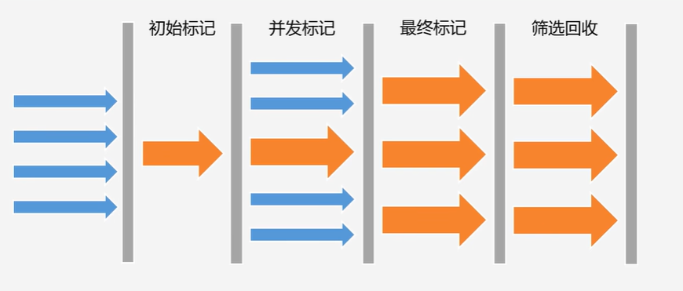

JVM 是 Java Virtual Machine 的缩写，它是一个虚构出来的计算机，一种规范。
大白话带你认识 JVM
JVM跨平台原理
本质：不同操作系统上运行的JVM是不一样的
字节码的作用
编译时：
Java代码———>字节码
运行时(解释)：
① Java代码——>机器指令
↑
| 快于
|
② 字节码———>机器指令
JAVA语言使用编译＋解释
(python仅解释 c++纯编译性)
有其他高级语言可以编译字节码，
也可以实现跨平台（兼容多种语言
JVM整体结构

- 类加载子系统：把磁盘上的东西(字节码)加载到内存
- JIT编译器：类似快表，缓存反复执行的(热点)指令不用每次编译
- 堆：产生的对象在里面
- Java方法栈：把某个线程的信息，定义的局部变量等
- 本地方法栈：native方法(jvm里面的)
- 程序计数器：记录等一下要去执行的下一条指令的地址(方便线程切换)
类加载子系统

不同类加载器加载的目录不一样(jre/lib ;jre/lib/etc; classpath你所指定的类加载器的路径)
双亲委派(BootStrapClassLaoder-ExtClassLoader-AppClassLaoder)
子类加载类时，先用父类加载类
- 避免类重复加载
- 防止核心API被篡改
Tomcat为什么要自定义类加载器
为了进行类的隔离
应用A和应用B设置各自的类加载器
JVM中判断一个类是不是已经被加载的逻辑是：类名＋对应的类加载器实例
运行时数据区
方法区&堆：多线程共享
Java方法栈&本地方法栈&程序计数器：各线程独享
程序计数器
PC Register
- 物理寄存器的抽象实现
- 记录待执行的下一条指令的地址
- 程序控制流的指示器，循环、if-else。异常处理、线程恢复等都依赖它来完成
- 解释器工作时就是通过它来获取下一条需要执行的字节码指令的
- 他是唯一一个在JVM规范中没有规定任何OutOfMemoryError情况的区域(不会内存溢出)
虚拟机栈(Java栈、Java方法栈)
- 虚拟机栈是线程私有的
- 一个方法开始执行栈帧入栈、方法执行完对应的栈帧就出栈，所以虚拟机栈不需要进行垃圾回收
- 虚拟机栈存在OutOfMemoryError、StackOverflowError
- 线程太多就有可能出现OutOfMemoryError，线程创建时没有足够的内存去创建虚拟机栈了
- 方法调用层次太多，可能就会出现StackOverflowError
- 可以通过-Xss来设置虚拟机栈的大小
栈帧

操作数栈
Operand Stack
计算机组成原理 加法器
本地方法栈
native method,在java中定义的方法，但由其他语言实现
虚拟机栈存的是Java方法调用过程中的栈帧，本地方法栈存的是本地方法调用过程中的栈帧
也是线程私有的，也可能出现OOM和SOF
堆
堆是JVM中最重要的一块区域，JVM规范中规定所有的对象和数组都应该存放在堆中，在执行字节码指令时，会把创建的对象存入堆中，对象对应的引用地址存入虚拟机栈中的栈帧中，不过当方法执行完之后，刚刚所创建的对象并不会立马被回收，而是要等JVM后台执行GC后，对象才会被回收
- -Xms，指定堆的初始化内存大小
- Xmx，指定堆的最大内存大小

垃圾回收
垃圾标记阶段
找到JVM中（主要是堆中）有那些垃圾对象
- 引用计数法
- 可达性分析法
引用计数法
每个对象都保存一个引用计数器属性，用户记录对象被引用次数
优点：
实现简单，计数器为0则表示是垃圾对象
缺点：
- 需要额外的空间来存储引用计数
- 需要额外的时间来维护引用计数
- 无法处理循环引用的问题
可达性分析法
以GC Roots为起始点，然后一层一层找到所引用的对象，被找到的对象就是存货对象，那么其他不可达的对象就是垃圾对象

GC Roots
GC Roots是一组引用，包括：
- 线程中虚拟机栈中正在执行的方法中方法参数、局部变量所对应的对象引用
- 线程中本地方法栈中正在执行的方法中方法参数、局部变量所对应的对象引用
- 方法区中保存的类信息中静态属性所对应的对象引用
- 方法区中保存的类信息中常量属性所对应的对象引用
- etc
标记-清除(Mark-Sweep)算法
针对某块内存空间，比如新生代、老年代，如果可用内存不足后，就会STW，暂定用户现成的执行，然后执行算法进行垃圾回收
- 标记阶段：从GC Roots开始遍历，找到可达对象，并在对象头中进行记录
- 清除阶段：堆内存空间进行线性遍历，如果发现对象头中没有记录是可达对象，则回收它
缺点：
- 效率不高
- 内存碎片
优点：
思路简单
复制算法
将内存空间分为两块，每次只使用一块，在进行垃圾回收时，将可达对象复制到另外没有被使用的内存块中，然后再清除当前内存块中的所有对象，后续再按同样的流程进行垃圾回收，交换着来
优点
- 效率高
- 不会出现内存碎片
缺点 - 需要更多的内存
- 对象存放的地址发生了改变，需要额外的时间修改栈帧中记录的地址引用
- 垃圾对象少时效率低
标记-整理(Mark-Compact)算法
第一阶段和标记-清除算法一样
第二阶段将所有存货对象移动到内存的一端
最后清理边界外所有的空间
分代收集算法
（只是一个理念）
不同对象的存活市场是不一样的，也就可以针对不同的对象采取不同的垃圾回收算法
默认几乎所有的垃圾收集器都是采用分代收集算法进行垃圾回收的
- 新生代中的对象存活时间比较短，可以利用复制算法，他适合垃圾对象比较多的情况
- 老年代中的对象存活时间比较长，可以用标记清除或标记整理算法，
比如：- CMS垃圾收集器采用的就是标记-清除算法
- Serial Old垃圾收集器采用的就是标记-整理算法

CMS
STW时间变短，用户体验更好，但是吞吐量变低了（单位时间内执行的用户线程更少了）

并发标记：遍历老年代，标记出所有可达对象
不需要STW，用户线程与垃圾收集线程一起执行
G1(Garbage-First)

JIT
JIT（Just-In-Time）编译器是一种动态编译技术，常用于将字节码或其他中间表示形式转换为本地机器码。JIT 编译器与传统的静态编译器不同，它在运行时根据需要进行编译，并将已编译的代码缓存以供后续重复执行。
JIT 编译器通常与虚拟机（如 Java 虚拟机）一起使用，用于提高程序的执行性能。以下是 JIT 编译器的基本工作过程：
解释执行：一开始，虚拟机会使用解释器直接解释字节码指令。这种解释执行的方式灵活但速度较慢。
热点探测：JIT 编译器会监控程序的运行情况，收集信息来确定哪些代码片段被频繁执行，即所谓的热点代码。
即时编译：当某个代码片段被判定为热点时，JIT 编译器将该片段的字节码转换为本地机器码。这个过程只发生一次，后续执行相同的代码时将直接使用已编译的机器码，不再解释执行。
缓存和优化：编译得到的机器码通常会被缓存起来，以备后续执行同样的代码。JIT 编译器还可以根据运行时的信息进行优化，例如内联函数调用、消除冗余检查等，以进一步提高性能。
通过将热点代码编译成机器码，JIT 编译器能够显著提高程序的执行速度。它在程序运行初期可能会有一些性能损失，因为需要额外的编译时间，但随着时间的推移和热点代码的不断优化，整体性能会得到提升。
JIT 编译器是许多现代虚拟机的关键组件，它们帮助解决了解释执行和静态编译之间的折衷，实现了高效的动态代码执行。
后话
0929,概念上的东西总是学得很快
但是好久没敲代码了，国庆该练练手了（捋袖子）